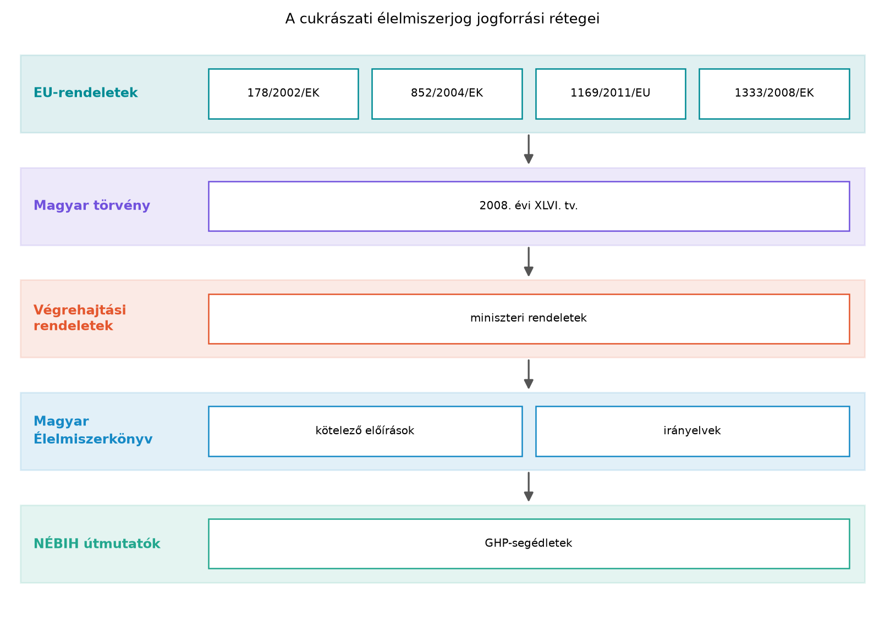
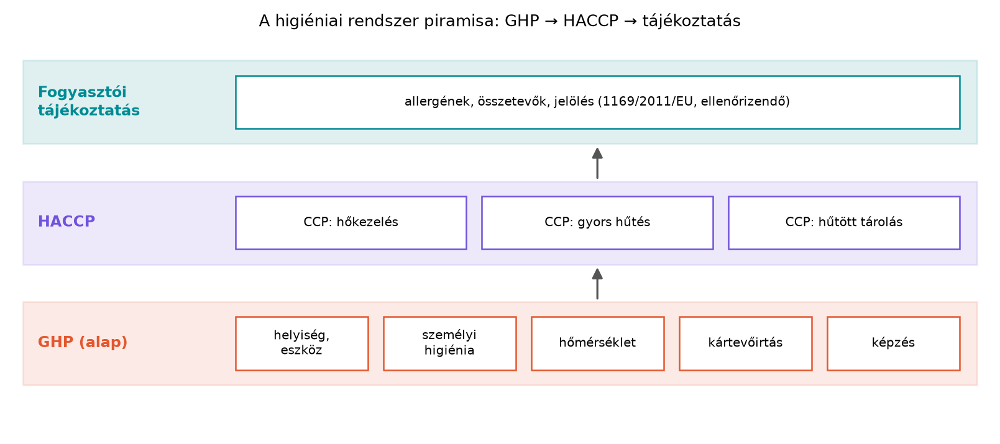

Egy cukrászüzemben reggel a pultban több tucat sütemény áll: krémes, Dobos-szelet, linzer, egy szelet mogyorós brownie. Az egyik vendég mogyoróallergiás, a másik laktózérzékeny. Az eladó csak akkor tud biztonságos választ adni, ha pontosan ismeri a termék összetevőit, és az azokra vonatkozó tájékoztatást. Ugyanakkor a hatósági ellenőr is kérheti a receptúrát, az allergéntájékoztatót és a nyomonkövetési adatokat. Ezért ebben az alfejezetben a jó higiéniai gyakorlat (GHP), a Magyar Élelmiszerkönyv és a fogyasztók tájékoztatásának gyakorlati rendszerét tanuljuk meg.
Képzelj el egy piramist. Az alján a GHP: helyiségek, berendezések, takarítás, személyi higiénia, hőmérsékleti fegyelem, kártevőirtás. Erre épül a HACCP, amely a termékfolyamat egyes lépéseinek kritikus pontjait szabályozza. A jogi réteg pedig az uniós rendeletektől a magyar törvényen át a Magyar Élelmiszerkönyvig és a NÉBIH útmutatókig tart. A fogyasztói tájékoztatás nem külön díszlet, hanem a vásárló egészségét és döntését szolgáló kötelező adatközlés.

A piramis higiéniai oldalát a második ábra mutatja: alul a GHP, rá épül a HACCP, a csúcson a fogyasztói tájékoztatás.

Az ábra azt mutatja, hogy a cukrász a mindennapokban leginkább a NÉBIH útmutatóival és az Élelmiszerkönyv termékleírásaival találkozik, de ezek nem légüres térben állnak: az uniós és magyar jogszabályokból vezethetők le. A rétegek között általában nincs ellentmondás, hanem egymásra épülnek: a magasabb szintű szabály keretet ad, az alacsonyabb szintű előírás vagy útmutató konkretizálja a cukrászati gyakorlatot.
Definíció. A jó higiéniai gyakorlat (GHP, Good Hygienic Practice) az élelmiszer-vállalkozás által alkalmazott, a higiénikus, biztonságos termeléshez szükséges alapvető feltételek és tevékenységek összessége. Ide tartozik például a helyiségek és eszközök tisztántartása, a személyi higiénia, a helyes hőmérsékleti tárolás, a kártevőirtás, a hulladékkezelés, a vízminőség és a dolgozók képzése.
Definíció. A HACCP (Hazard Analysis and Critical Control Points) a veszélyelemzésen és a kritikus szabályozási pontokon alapuló élelmiszerbiztonsági rendszer. Nem helyettesíti a GHP-t, hanem arra épül: a GHP az általános higiénés alap, a HACCP pedig a termékfolyamat azon pontjaira koncentrál, ahol egy hiba közvetlenül egészségkárosodást okozhat (például elégtelen hőkezelés, túl lassú hűtés, keresztszennyeződés nyers tojásról kész krémre).
Definíció. A Magyar Élelmiszerkönyv a magyar élelmiszerjog sajátos jogintézménye. Kétféle tartalmat fog össze: egyrészt kötelező előírásokat, amelyek bizonyos termékek összetételére, megnevezésére, jelölésére vonatkoznak, másrészt irányelveket, amelyek a jó gyakorlatot, a termék jellemzőit írják le. Cukrászati szempontból fontos, hogy a Magyar Élelmiszerkönyv termékspecifikus előírásokat is tartalmazhat – például cukrászati termékekre, fagylaltra, kakaó- és csokoládétermékekre, mézre, lekvárra (ellenőrizendő: a hatályos kötetek pontos száma, címe és tartalma).
Definíció. Előre csomagolt élelmiszer az az élelmiszer, amelyet a fogyasztónak vagy közétkeztetésnek szántak, és amelyet a fogyasztó jelenléte nélkül csomagoltak, úgy, hogy a csomagolás megváltoztatása nélkül az élelmiszer tartalma nem változtatható meg. A pultonként kimért, a vevő előtt csomagolt vagy a helyben fogyasztásra kínált sütemény általában nem előre csomagolt, ezért rá részben eltérő, egyszerűsített tájékoztatási szabályok vonatkozhatnak.
Definíció. A minőségmegőrzési idő azt az időpontot jelöli, ameddig az élelmiszer megtartja elvárt minőségét, feltéve, hogy a tárolási feltételeket betartották. A fogyaszthatósági idő pedig azt az időpontot jelöli, amely után a mikrobiológiailag gyorsan romló élelmiszer már nem fogyasztható, mert közvetlen egészségügyi kockázatot jelenthet. A friss tejszínes, tojásos, krémes süteményeknél általában fogyaszthatósági időt kell alkalmazni, a száraz, keksz jellegű terméknél általában minőségmegőrzési időt.
A cukrászüzemben a GHP és a HACCP nem két külön világ. A GHP azt biztosítja, hogy a termelés környezete általában biztonságos legyen: tiszta munkalap, megfelelő kézmosás, hűtőszekrény hidegen tartása, tiszta ruházat. Ha a GHP nem működik, a HACCP sem tud mentőövet nyújtani, mert minden lépésnél keresztszennyeződés vagy túlélő mikroba lehet. A HACCP ezután a folyamatábrán azonosítja azokat a pontokat, ahol a veszélyt mérni, dokumentálni és korrigálni kell.
Például egy krémes készítésénél a GHP magában foglalja, hogy a tojást hűtve tárolják, a munkalapot fertőtlenítik, a krémet főzik. A HACCP ezen belül kritikus pontként kezeli a krém hőkezelését és a hűtés sebességét: a cél, hogy a krémmag hőmérséklete megfelelő idő alatt csökkenjen le, mert a lassú hűtés kedvez a spórás vagy utószennyező baktériumok elszaporodásának (ellenőrizendő: az adott krémre és gyártói útmutatóra vonatkozó konkrét hőmérséklet–idő érték).
Szabály. A GHP a HACCP előfeltétele. Ha a GHP hiányos, a HACCP kritikus határai nem tarthatók megbízhatóan, és a rendszer csak papíron működik. A NÉBIH jó higiéniai gyakorlat útmutatói segítenek a GHP cukrászati értelmezésében; ezek ágazati segédletek, nem helyettesítik a jogszabályt, de a hatósági ellenőrzés is figyelembe veszi őket (ellenőrizendő: a cukrászatra vonatkozó NÉBIH útmutató pontos címe, kiadása és verziója).
A Magyar Élelmiszerkönyvben a cukrászati termékekre vonatkozó előírások és irányelvek különösen fontosak, mert meghatározhatják, milyen termék nevezhető például „tejszínesnek”, „vajas krémnek”, „gyümölcsösnek”, „marcipánnak”, „fagylaltnak” vagy „jégkrémnek”. Ha egy termék a boltban „tejszínes piskóta”, akkor a terméknek a vonatkozó előírás szerint meghatározott tejszín-, adott esetben tejzsír-tartalommal kell rendelkeznie; ellenkező esetben a megnevezés félrevezető lehet (ellenőrizendő: a hatályos Élelmiszerkönyv cukrászati fejezetének pontos száma, fogalommeghatározásai és összetételi követelményei).
A Magyar Élelmiszerkönyv alapján a hagyományőrző magyar termékeknél is lehetnek elvárások. A Dobos torta, az Eszterházy torta, a krémes, a Rigó Jancsi esetében a szakmai gyakorlat és a vonatkozó irányelvek rögzíthetnek jellegzetes tészta- és krémösszetételt, felépítést, bevonatot. Ez nem jelenti azt, hogy minden üzemben azonos receptúra szerint kell dolgozni, de a termék neve nem használható félrevezetően: ha egy termékben nincs vajkrém, nem szabad „Eszterházy” néven árulni, ha a fogyasztó ezen a néven a hagyományos vajas diós krémtortát várja (ellenőrizendő: az adott termékre vonatkozó irányelv vagy szakmai gyűjtemény).
Jogszabály. A Magyar Élelmiszerkönyv a 2008. évi XLVI. törvény felhatalmazása alapján kiadott miniszteri rendeletekkel jelenik meg; a cukrászati termékekre vonatkozó részeket a Magyar Élelmiszerkönyv hatályos kötetei tartalmazzák (ellenőrizendő: a pontos rendeletszámok és fejezetszámok). Az egyes termékleírások megsértése élelmiszerjogi jogsértést jelenthet, még akkor is, ha a termék nem közvetlenül veszélyes, mert a vásárló tájékoztatása és a tisztességes kereskedelmi gyakorlat sérül.
A fogyasztói tájékoztatás alapját az 1169/2011/EU rendelet adja. A cukrászati termékeknél a gyakorlatban a következő adatokat kell értelmezni:
Jogszabály. Az 1169/2011/EU rendelet meghatározza az előre csomagolt élelmiszerek kötelező jelölési adatait, az allergének feltüntetését, a minimális betűméretet, a tápértékjelölést és a fogyasztók megtévesztésének tilalmát (ellenőrizendő: a vonatkozó cikkek és mellékletek aktuális szövege). A nem előre csomagolt élelmiszerekre a tagállamok egyszerűsített tájékoztatási szabályokat állapíthatnak meg, ezért a hazai pultban árusított süteményekre a magyar jogszabály az irányadó (ellenőrizendő: a nem előrecsomagolt élelmiszerek tájékoztatásáról szóló hazai rendelet pontos száma).
Az alábbi táblázat összefoglalja a leggyakoribb adatköröket.
| Adatkör | Előre csomagolt cukrászati termék | Pultból, nem előrecsomagolt termék | Megjegyzés |
|---|---|---|---|
| Élelmiszer megnevezése | Kötelező, jogszabály szerinti vagy szokásos név | Kötelező, jól láthatóan, például pultfeliraton | A név nem lehet félrevezető |
| Összetevők listája | Kötelező, csökkenő tömeg szerint | A hazai szabályok szerint lehet egyszerűsített, de allergéntájékoztatás mindig kell | Ellenőrizendő a magyar szabály |
| Allergének kiemelése | Igen, az összetevők között jól megkülönböztethetően | Igen, írásban vagy dokumentáltan szóban | A 14 allergéncsoport szerint |
| Nettó mennyiség | Kötelező, g/kg vagy ml/l mértékegységben | Gyakran darabszám, szelettömeg; ha nem egyértelmű, tömeg is kell | A mértékegység legyen közérthető |
| Minőségmegőrzési vagy fogyaszthatósági idő | Kötelező, a romlékonyság szerint | Krémes, tejszínes terméknél fogyaszthatósági idő | A hűtési lánc megszakítása tilos |
| Különleges tárolási/felhasználási feltétel | Kötelező, ha szükséges, pl. hűtve tárolás | Kötelező, pl. hűtve tárolás, gyors fogyasztás | Például „0–5 °C között tárolandó” (tanulási példa; ellenőrizendő: hatályos előírás/HACCP-terv) |
| Gyártó/forgalmazó neve és címe | Kötelező | Az eladóhely adatai | A nyomonkövetés alapja |
| Tápértékjelölés | Kötelező, kivételek lehetnek | Általában nem kötelező, de adható | Energia, zsír, telített zsír, szénhidrát, cukrok, fehérje, só |
| Származási ország | Ha hiánya félrevezetné a fogyasztót | Egyes húsoknál kötelező lehet (lásd később) | Cukrászati alapanyagoknál ritkán |
Allergének kiemelése. Az összetevőlistában a 14 jelölendő allergéncsoportot – többek között glutén, tojás, tej, diófélék, földimogyoró, szója, szezám, kén-dioxid – úgy kell feltüntetni, hogy azok jól láthatóak legyenek. A gyakorlatban ez lehet félkövér, nagybetűs, aláhúzott vagy színnel kiemelt írásmód. A pultban árult süteménynél az allergénekről írásban vagy más, a fogyasztó számára hozzáférhető módon kell tájékoztatni; a szóbeli tájékoztatás csak meghatározott feltételekkel fogadható el, és annak dokumentálhatónak kell lennie (ellenőrizendő: a hazai előírás a pultos termékek allergéntájékoztatásáról).
Tömeg és darabszám. Az előre csomagolt dobozos süteménynél a nettó tömeg a csomagolás nélküli tömeg. Ha a dobozban szeletek vannak, akkor a nettó tömeg mellett a darabszám is szerepelhet, de a tömeg nem maradhat el (ellenőrizendő). A pultos termékeknél gyakori, hogy a táblán csak az ár és a név szerepel; ilyenkor a tömegre vonatkozó adatot a vevő kérésére, mérés alapján kell tudni megadni (ellenőrizendő: a kimért termékekre vonatkozó hazai tájékoztatási gyakorlat).
Tápértékjelölés. Az előre csomagolt terméken a táplálkozási adatokat 100 g-ra vagy 100 ml-re kell megadni, a rendeletben meghatározott sorrendben: energia, zsír, telített zsírsav, szénhidrát, cukrok, fehérje, só. Ezen kívül lehet adagonként is közölni, de csak akkor, ha az adag nagysága egyértelmű. Cukrászati termékeknél az energia gyakran 100 g termékre 1300–2100 kJ között mozog, de ez erősen függ a zsír- és cukortartalomtól. A tápértékadat lehet számított, például receptúrából, tápanyagtáblázatból vagy gyártói adatlapból. A számított érték szemléltető jellegű, a tényleges érték alapanyag-ingadozás miatt kissé eltérhet (ellenőrizendő: a tápérték kiszámításához használt adatbázis vagy gyártói adat).
A szennyező anyagok – például nehézfémek, mikotoxinok, akrilamid – határértékei uniós rendeletekben szerepelnek. A cukrászati termékeknél az akrilamid csökkentése kiemelt kérdés, mert a magas hőmérsékleten sült, keményítőtartalmú tésztákban, kekszekben akrilamid képződhet. A hatóság nem minden terméket vizsgál, hanem kockázatalapú mintavétellel ellenőriz, és a határérték feletti szennyező anyag esetén intézkedik. A termelő feladata, hogy a nyersanyagot okosan válassza meg, a sütési hőmérsékletet és időt a terméknek megfelelően tartsa, és ne égetett, túlsütött felületű terméket hozzon forgalomba (ellenőrizendő: a hatályos szennyezőanyag-rendelet pontos száma és a cukrászati termékekre vonatkozó határértékek).
Jogszabály. Az élelmiszer-adalékanyagokat csak az 1333/2008/EK rendeletben engedélyezett anyagként, az engedélyezett élelmiszerekben, a megengedett feltételek és mennyiségek szerint lehet felhasználni (ellenőrizendő: a konkrét cukrászati kategóriák és maximális felhasználási mennyiségek a rendelet mellékleteiben). Cukrászati szempontból fontosak a tartósítószerek, savanyúságot szabályozó anyagok, sűrítőanyagok, emulgeálószerek, zselésítő anyagok és színezékek. A „quantum satis” elvű anyagoknál sem lehet többet használni a technológiailag feltétlenül szükségesnél.
Vegyünk egy elképzelt, de valósághű címkét.
Termék neve: Mogyorós brownie krémsajtos
töltelékkel
Nettó tömeg: 300 g
Összetevők: cukor, étcsokoládé (kakaómassza, cukor,
kakaóvaj, emulgeálószer: szójalecitin), vaj
(tej), tojás,
búzaliszt, mogyoró, krémsajt
(tej), kakaópor.
Fogyaszthatósági idő: 2025.06.20.
Tárolás: 0–5 °C között (tanulási példa; ellenőrizendő:
a termék HACCP-terve szerinti érték).
Gyártó: Példa Cukrászda Kft., 1111 Budapest, Próba utca
1.
Tápérték 100 g-ban: energia: 1850 kJ/440 kcal; zsír: 24
g, ebből telített zsírsavak: 12 g; szénhidrát: 50 g, ebből cukrok: 40 g;
fehérje: 6 g; só: 0,2 g.
Értelmezés. A termék neve egyértelmű, a nettó tömeg szerepel. Az összetevők csökkenő tömeg szerint vannak felsorolva: a legnagyobb tömeg a cukor, majd az étcsokoládé. A csokoládé összetevőit külön zárójeles bontás adja meg. Az allergéneket az összetevőlistán belül, félkövér szedéssel kiemelték, a konkrét összetevő nevével: szójalecitin, vaj (tej), tojás, búzaliszt, mogyoró, krémsajt (tej). Ez megfelel az 1169/2011/EU 21. cikke és II. melléklete szerinti kiemelés elvének; külön „Allergének:” összesítő sorra előre csomagolt terméken nincs szükség, és a lista kiemelését nem pótolná (ellenőrizendő: a Bizottság allergénkiemelésre vonatkozó közleménye). A mogyoró a földimogyoró-csoporttól különbözik: a mogyoró (Corylus) a diófélék csoportjába tartozik, ezért a lista a konkrét dióféle nevét emeli ki. A fogyaszthatósági időt és a hűtést azért indokolja a termék, mert a hőkezelés utáni krémsajtos töltelék tejet tartalmaz, és hűtve is gyorsan romló kategóriába tartozik; tojásos-vajas, de átsütött, töltelék nélküli változatnál (száraz, hűvös helyen tárolva) minőségmegőrzési idő járna (ellenőrizendő: a gyártó eltarthatósági vizsgálata). A tárolási hőmérsékletet megadták. A tápértékadatok 100 g-ra vonatkoznak, és tartalmazzák a kötelező mezőket. A gyártó adatai lehetővé teszik a nyomon követést.
Most nézzük a pultos változatot. A cukrászüzemben ugyanezt a brownie-t szeletenként, csomagolás nélkül árulják a pultban. Ilyenkor a pulton vagy a termék mellett feliratnak kell jelölnie legalább a termék nevét. Az allergén tájékoztatást írásban, például egy allergéntáblázatban vagy fóliázott lapon kell biztosítani: „Allergének: glutén, tojás, tej, diófélék, szója.” A fogyaszthatósági időt és a tárolási hőmérsékletet a termékre jellemzően a készítési naphoz viszonyítva kell megadni. Ha a vevő kérdezi, a pontos nettó tömeg lemérhető. A tápértékjelölés a pultos, nem előre csomagolt terméknél általában nem kötelező, de ha a vállalkozó önként adja, annak pontosnak és ellenőrizhetőnek kell lennie (ellenőrizendő: a hazai pultos tájékoztatási követelmények).
Ez az útmutató nem sütési művelet, hanem a forgalomba hozatal előtti ellenőrzés.
Higiénia. A címkézési munka is higiénés környezetben történjen: tiszta munkalap, tiszta kéz, a csomagolóanyag ne érintkezzen nyersanyaggal, és a címkét ne ragasszák vizes, szennyezett felületre.
A jelölés minősége akkor megfelelő, ha: - a szöveg jól olvasható, a betűk elérik a minimális méretet (ellenőrizendő: az 1169/2011/EU szerinti minimális betűméret), - az allergének kiemelése egyértelmű, - a nettó tömeg pontosan mérhető, - a fogyaszthatósági/minőségmegőrzési idő összhangban van a termék romlékonyságával, - a tápértékadatok hiánytalanok és 100 g-ra (vagy 100 ml-re) vonatkoznak, - a termék neve nem ígér olyan összetevőt, amely nincs benne (pl. „tejszínes” megnevezés tejszín nélkül).
Hiba 1. Az allergének nincsenek kiemelve az
összetevőlistában.
Tünet: a vásárló nehezen találja meg a „glutént” vagy a „tejet”.
Ok: a gyártó csak felsorolta az allergéneket, de vizuálisan nem
különítette el.
Megelőzés: az allergéncsoportokat félkövér, nagybetűs vagy más, jól
látható módon kell kiemelni.
Javítás: a címkét újra kell nyomtatni, pultos terméknél az
allergéntáblát frissíteni.
Hiba 2. Friss, krémes, tojásos terméken
minőségmegőrzési idő szerepel, nem fogyaszthatósági idő.
Tünet: a vásárló azt hiheti, hogy a termék tovább eltartható, pedig
hűtve is gyorsan romlik.
Ok: a két időtípus közötti különbség nem ismert.
Megelőzés: a romlékony cukrászati termékeknél mindig a fogyaszthatósági
időt kell használni, és a fogyaszthatósági idő lejárta után a terméket
ki kell vonni a forgalomból.
Javítás: a hibás címkéjű terméket nem szabad így forgalmazni; a címkét
ki kell javítani.
Hiba 3. A pultban árult krémes szeletnél nincs
írásos allergéntájékoztató.
Tünet: az eladó nem tud pontos allergénlistát mutatni.
Ok: a vállalkozás úgy gondolja, hogy a pultos termékre nem vonatkozik
kötelező allergéntájékoztatás.
Megelőzés: a pult közelében az összes pultos termék allergénjét
tartalmazó, jól látható, friss táblázatot kell elhelyezni.
Javítás: azonnal pótolni kell a táblázatot, és az eladókat oktatni.
Hiba 4. A tápértékjelölés csak „adagonként”
szerepel, de az adag méretét nem tüntetik fel.
Tünet: a fogyasztó nem tudja, mekkora adagra vonatkozik az adat.
Ok: a kényelmesebbnek tűnő adagos közlésből kimaradt a 100 g-ra
vonatkozó kötelező adat.
Megelőzés: mindig a 100 g-ra vagy 100 ml-re vonatkozó adatokat kell
alapként közölni; az adagos kiegészítés csak ez után jöhet.
Javítás: a címkét újra kell nyomtatni.
Egy cukrászüzemben a délelőtti termelés után a pultba kihelyeztek egy szelet „Eszterházy tortát”. A dióallergiás vendég megkérdezte, tartalmaz-e diót. Az eladó nem volt biztos benne, mert a pultnál nem volt allergéntáblázat, és a receptúrát sem tudta azonnal megmutatni. A vevő elállt a vásárlástól, az üzletvezető pedig utólag belátta, hogy ez elkerülhető lett volna. A hiba nem jár közvetlen ételmérgezéssel, de a fogyasztó biztonságérzetét és a vállalkozás hitelességét rontja. A helyes gyakorlat az, hogy minden pultos termékhez rendelkezésre áll egy friss allergéntáblázat: a diófélék a krémben és a díszítésben is szerepelnek, ezért a „diófélék” mellett a „tojás”, a „tej”, a „glutén” is fel van tüntetve. Az eladót pedig kiképezik, hogy kérdés esetén a technológiai lapot is elő tudja venni. Egy esetleges hatósági ellenőrzés során az ilyen hiányosságot jegyzőkönyvben rögzíthetik, és felszólíthatják a vállalkozót a javításra.
1. feladat (A)
Határozd meg a GHP és a HACCP viszonyát egy krémes készítésénél.
2. feladat (A)
Egy előre csomagolt piskóta címkéjén a következő adatok szerepelnek:
„Összetevők: cukor, tojás, búzaliszt, vaj, tejszín, sütőpor. Allergének:
glutén, tojás, tej.” Mi hiányzik a felsorolásból, ha a termék kakaóport
is tartalmaz?
3. feladat (B)
Döntsd el, hogy a következő termékeknél inkább minőségmegőrzési vagy
fogyaszthatósági időt használnál: (a) száraz linzer, (b) krémes, (c)
hidegúton készült piskóta tejszínhabos töltelékkel, (d) fondánnal
bevont, száraz piskótaszelet alkoholos ütéssel. Indokold.
4. feladat (B)
Egy cukrászüzemben 1 kg mogyorós brownie-t készítenek. A tészta
összetevői: étcsokoládé 220 g, vaj 180 g, tojás 200 g, cukor 180 g,
búzaliszt 120 g, mogyoró 100 g. Készítsd el az összetevőlistát csökkenő
tömeg szerint, és jelöld meg a kiemelendő allergéneket. Mely
allergéncsoportok szerepelnek?
5. feladat (C)
Egy pultban árult krémes szeletnél a felirat csak ennyi: „Krémes”. A
vendég tojásallergiás. Az eladó szóban azt mondja, hogy szerinte nincs
benne tojás, de nem tudja biztosan. Elemezd a hibát: mi a kockázat, és
milyen intézkedést kell tenni?
6. feladat (D)
Keress otthon vagy a boltban egy előre csomagolt cukrászati terméket
(keksz, csokoládé, szelet). Tölts ki egy egyszerű címke-ellenőrző lapot:
termék neve, nettó tömeg, összetevők, allergének kiemelése, időjelölés
típusa, tárolási feltétel, tápérték 100 g-ban. Értékeld, hogy megfelel-e
a jelölés a tanultaknak. Ha hibát találsz, írd le a javítást.
Önellenőrzés – válaszok
1. feladat
A krémesnél a GHP biztosítja, hogy a tojást hűtve tároljuk, a munkalapot
fertőtlenítjük, a kezünk tiszta. A HACCP kijelöli a főzés és gyors hűtés
kritikus pontját: ha a krém nem éri el a megfelelő hőmérsékletet, vagy
túl lassan hűl, a mikrobák elszaporodhatnak. Tehát a GHP az általános
alap, a HACCP a konkrét kockázati pontokat kezeli.
2. feladat
Ha a termék kakaóport is tartalmaz, akkor a „kakaópor” összetevőt fel
kell tüntetni. Hiányzik a kakaópor az összetevőlistából (a tömeg
szerinti helyén). A kakaópor nem tartozik a 14 allergéncsoportba, így az
allergénjelölés nem változik; az allergéneket az összetevőlistán belül
is ki kell emelni (tojás, búzaliszt,
vaj (tej), tejszín (tej)). Ha a
kakaópor gyártói adatlapja allergén-összetevőt említ, azt is ki kell
emelni (ellenőrizendő).
3. feladat
(a) száraz linzer: minőségmegőrzési idő; (b) krémes: fogyaszthatósági
idő; (c) hidegúton készült piskóta tejszínhabos töltelékkel:
fogyaszthatósági idő; (d) fondánnal bevont, száraz piskótaszelet
alkoholos ütéssel: általában minőségmegőrzési idő. Az alkoholos ütés
összetevőként (pl. rum) szerepel az összetevőlistában; az
alkoholtartalom külön feltüntetése tájékoztatási kérdés (ellenőrizendő:
1169/2011/EU és hazai szabály, pontos romlékonysági besorolás).
Gyermekeknek szánt termékbe alkoholos ütés nem való.
4. feladat
Az összetevők csökkenő tömeg szerint: étcsokoládé (220 g), tojás (200
g), vaj (180 g), cukor (180 g), búzaliszt (120 g), mogyoró (100 g).
Kiemelt allergének (csoport): étcsokoládé – szója (ha szójalecitin van
benne, ellenőrizendő), vaj – tej, tojás – tojás, búzaliszt – glutén,
mogyoró – diófélék. Az összetevőlista helyesen: „étcsokoládé
(kakaómassza, cukor, kakaóvaj, emulgeálószer:
szójalecitin), tojás, vaj
(tej), cukor, búzaliszt,
mogyoró.” Ez a feladat a későbbi Expediálás, csomagolás, szállítás, tárolás és üzleti
árukezelés alfejezetben a termékkísérő dokumentumokhoz is
kapcsolódik.
5. feladat
A hiba: a pultos termékről hiányzik az írásos allergéntájékoztató, az
eladó nem tudja a pontos összetevőt. Kockázat: a tojásallergiás vendég
súlyos allergiás reakciót kaphat, ha a krém tojást tartalmaz.
Intézkedés: azonnal fel kell tüntetni a pultnál az allergéneket, a krém
receptúráját ellenőrizni, az eladókat oktatni, és a technológiai lapot a
pult közelében tartani. Ha a krém valóban nem tartalmaz tojást, az
írásos allergéntáblázatban akkor is szerepeltetni kell a termék nevét és
a „tojást nem tartalmaz” jelzést.
6. feladat
A gyakorlati feladat teljesítése a tanuló által választott terméktől
függ. Értékelési szempontok: helyesen azonosította-e a termék nevét,
nettó tömegét, összetevőlistáját, allergénkiemelését, időjelölés
típusát, tárolási feltételét, tápértékadatait. Ha hibát talált, pontosan
leírta-e, milyen szabályt sért, és hogyan lehetne javítani.
A GHP a cukrászüzem mindennapi higiénés alapja: tiszta környezet, helyes tárolás, személyi higiénia, kártevőirtás és képzés. A HACCP erre épül, és a termékfolyamat azon pontjait szabályozza, ahol egy hiba közvetlenül élelmiszerbiztonsági kockázatot jelent. A Magyar Élelmiszerkönyv kötelező előírásai és irányelvei meghatározhatják a cukrászati termékek megnevezését és összetételét; ezért a termék nevét nem használhatjuk félrevezetően. A fogyasztói tájékoztatás alapja az 1169/2011/EU rendelet: előre csomagolt terméken fel kell tüntetni a megnevezést, az összetevőket, a 14 allergéncsoport kiemelését, a nettó mennyiséget, a minőségmegőrzési vagy fogyaszthatósági időt, a tárolási feltételt, a gyártó/forgalmazó adatait és a tápértékjelölést. Pultos, nem előre csomagolt termékeknél a hazai szabályok egyszerűsítést engedhetnek, de az allergéntájékoztatás mindig kötelező. A határértékek – szennyezők, adalékanyagok – kockázatalapú elven működnek, és uniós rendeletek rögzítik őket. Továbbvitt eredmény. A címke kötelező adatai, az allergénkiemelés és a fogyaszthatósági/minőségmegőrzési idő a A vendéglátás különleges szabályai, ételmérgezés bejelentése, kártevőirtás és hatósági ellenőrzés, a Fogyasztóvédelem: jogok, intézmények, vásárlók könyve, szavatosság és jótállás és az Expediálás, csomagolás, szállítás, tárolás és üzleti árukezelés alfejezetekben térnek vissza.
A szöveg hivatkozik a 1169/2011/EU rendeletre, a 852/2004/EK rendeletre, a 178/2002/EK rendeletre, a 1333/2008/EK rendeletre, a 2008. évi XLVI. törvényre, a Magyar Élelmiszerkönyv hatályos köteteire és a NÉBIH jó higiéniai gyakorlat útmutatóira. Ellenőrizendő: a Magyar Élelmiszerkönyv cukrászati termékekre vonatkozó fejezeteinek pontos száma és tartalma, a hazai pultos/ nem előrecsomagolt élelmiszerek tájékoztatásáról szóló rendelet, a szennyezőanyag-határértékeket tartalmazó hatályos uniós rendelet száma, a húsok származási helyének jelölésére vonatkozó konkrét szabályok, valamint a hőmérséklet- és időértékek célzott ellenőrzése.